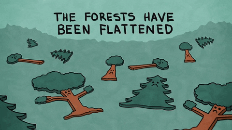

To save tigers, we need to protect the forest habitats across Asia where they live. By saving biologically diverse places, we allow tigers to roam and preserve the many other endangered species that live there. As a large predator, the tiger plays a key role in maintaining healthy ecosystems.
Forests are being cut down for various purposes like paper, palm, housing, furniture, firewood. Deforestation has been the cause of a truly massive number of species extinction in modern times and historical times. It always lacks the large biodiversity of its previous state
Consumers demand for tiger body parts poses the largest threat to the tiger. Tigers are being illegally hunted for their skin, bones, teeth, nails, etc. which are highly valuable for medicinal use and remedies. In the past 10 years over 1000 tigers are hunted to meet the consumer demand. Chinese people use tiger skin and other body parts for medicinal use and black magic with the disappearance of the original forest, many species go extinct, and many that don’t lose a great deal of their genetic diversity and variation.

There is certain disease that spread like an epidemic. Diseases like Feline Panleukopenia, Tuberculosis, Sarcocystis have to lead to endangered of tigers. Health Management of wildlife is neglecting.

There are many peoples who hunt tigers for sports and for other decorative purposes. A recent trend has been the hunting of tigers for human consumption. Many people in China believe that tiger meat and bones have medicinal elements which are beneficial for human health her body parts for medicinal use and black magic with the disappearance of the original forest, many species go extinct, and many that don’t lose a great deal of their genetic diversity and variation.
 TIGER.COM
TIGER.COM